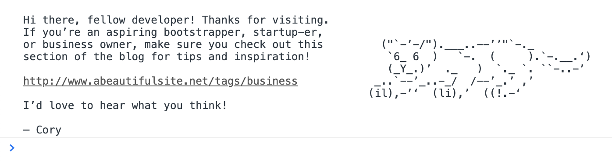

How to leave a console greeting for your visitors
Since my audience consists primarily of web developers, I decided to try a little experiment the other day. I added a console greeting to the site for anyone who decides to look under the hood. Here's how I did it.
What the heck is a console greeting? #
Some time ago, I saw a post about a web design agency that advertised a developer job in an HTML comment on their website. The idea was that a developer might be checking out the source and possibly apply for the position. I'm not sure if it worked, but it was definitely a clever idea.
The other day I was updating a script and thought, "how cool would it be if someone left a fun greeting in the developer console?"
Lately I've been trying to write more about my experience running a bootstrapped SaaS business, which I think can be very valuable to developers. To help promote this new section of the blog, I added the following message that will appear in a visitor's console should they happen to open it while visiting my site:

The greeting invites visitors to check out the Business section of my blog, and I've left my Twitter handle in case they want to get in touch with me. The panther is there as a "wow" effect, which I think will help reception. What's nice is that in Chrome and Safari, the link is actually clickable!
How to do it #
The idea is simple. When the page loads, leave a message in the developer console. All it takes is a bit of JavaScript:
console.log(
'\n' +
'Hi there, fellow developer! Thanks for visiting.\n' +
'If you’re an aspiring bootstrapper, startup-er,\n' +
'or business owner, make sure you check out this ("\`-’-/").___..--’’"\`-._\n' +
'section of the blog for tips and inspiration! \`6_ 6 ) \`-. ( ).\`-.__.‘)\n' +
' (_Y_.)’ ._ ) \`._ \`. \`\`-..-’\n' +
'http://www.abeautifulsite.net/tags/business _..\`--’_..-_/ /--’_.’ ,’\n' +
' (il),-’‘ (li),’ ((!.-‘\n' +
'I’d love to hear what you think!\n' +
'\n' +
'— Cory\n'
);
It's a bit ugly with all the concatenation and newlines, but you get the idea. Of course, if the visitor doesn't have their console open, they simply won't see anything. The script itself is benign and only serves as a clever way to reach out to someone who happens to be browsing with the dev console open.
What do you think of this idea? Silly, fun, annoying, awesome? What other ways can the console be used to charm or impress your tech-savvy visitors? Have you seen any other websites do this?